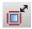

20
RF Transmission Lines
This chapter provides information about the options available from the RF-Module menu in Schematics XL.
The following sections are included:
Related topics
Spectre Circuit Simulator RF Analysis Library Reference
RF Workspace and toolbar
The RF workspace is designed to help you create transmission lines on the canvas. The workspace comprises the following elements.
|
Constains a list of RF features available in Schematics XL, including the Transmission Lines submenu. |
||
|
RF sets are automatically created for each RF net topology the next time connectivity is updated. The Details pane shows only those object types that are associated with the selected set. |
||
|
Allows you to view and edit the properties of the selected transmission lines and their cells. |
||
|
Commands to assist you in creating topologies and in adding transmission lines directly onto the schematic. |
The RF toolbar commands contains the following icons:
The options to Inflate, Create Net Topology and Create Stackup are to assist in creating transmission lines and are also available from the Transmission Lines submenu on the RF-Module menu. The remaining toolbar commands are shortcuts to placing transmission cells, allowing you to quickly place instances onto the schematic. Each symbol on the toolbar represents command for a different transmission line cell.
On the RF-Module menu, the Transmission Lines submenu contains the following commands:
For details on the other menu options, see the
Inflate
The Inflate command stretches the existing schematic, preserving the design to accommodate space for transmission line insertion. This is useful when inserting net topologies into existing designs.
This command is available from RF-Module – Transmission Lines – Inflate or by using the Inflate button on the RF toolbar.
Each click on the Inflate  button increases the schematic size by a fixed increment.
To see the results, select Zoom to Fit from the View menu.
Create Net Topology
A net topology contains all schematic instances and nets associated with a single RF net implementation. The Create Net Topology command, provides a fast error-free method of creating and editing net topologies.
The command is available from RF-Module – Transmission Lines – Create Net Topology or by using the Create Net Topology  button on the RF toolbar. It allows you to create a design by building transmission lines and transmission cells on a grid mode. A catalog of transmission cells is available. Each transmission cell is provided with preset metrics already defined which are stored in the
button on the RF toolbar. It allows you to create a design by building transmission lines and transmission cells on a grid mode. A catalog of transmission cells is available. Each transmission cell is provided with preset metrics already defined which are stored in the RFTlineLib. The metrics control the behavior and ensure that the placement of a cell is correctly constructed in relation to those adjacent to where it is being placed. For example, a cell with a curved bend cannot be placed next to another curved bend.
The rfTlineLib discontinuities (tees, bends, curves, and others) automatically collect the adjacent lines’ connectivity properties from the circuit’s topology.
There are two types of components:
The Create Net Topology command proposes connected transmission lines and discontinuities to ensure a net topology is correctly constructed. Where there is existing wiring it proposes transmission lines and discontinuities based on the existing wire topology.
Using the Create Net Topology command on a blank canvas
The Create Net Topology command proposes connected transmission lines and discontinuities to ensure a net topology is correctly constructed.
- Open the RF workspace.
-
Select RF-Module - Transmission Lines – Create Net Topology or click the Create Net Topology
button on the RF toolbar.
Identify the location on the design that requires transmission lines to be added.

-
The cursor is initially loaded with a mlin transmission cell. Hover the transmission cell over the required position and
Tabto cycle /SHIFT+Tabto reverse cycle through the available options for that location.
-
Once the required cell type is in the correct location, click on the canvas to fix the position. As soon as you click, the next proposed transmission cell is displayed.
The type of transmission cell proposed is based on the current topology. The yellow dotted lines and the arrows are the grid-based placer which guides you in the available directions for placing the next transmission cell. -
Move in the required direction and click to position the next cell.
Repeat until the required topology is complete. -
Press
Enteror double-click to build the topology. (PressingEsccancels the Create Net Topology command.)
Once built, the transmission lines and cells can be repositioned as required.
RF sets are automatically created for each RF net topology in the Navigator assistant the next time connectivity is updated.
To select all contents of a Net Topology, right-click on an RF set and select Select Content from the context menu. To copy, move, or delete an entire net topology, select a single wire and triple-click. All instances and wires in the same net topology are selected.
Using the Create Net Topology command on an existing canvas
On a canvas where there is existing wiring, the Create Net Topology command proposes transmission lines and discontinuities based on the existing wire topology.
-
Open the RF workspace.
Identify the location on the design that requires transmission lines or cells to be added.
Before proceeding, ensure there is enough space to accommodate the additions that require to be made. You can use the Inflate option to expand the space between devices that are connected while maintaining the existing topology. -
Select RF-Module – Transmission Lines – Create Net Topology or click the Create Net Topology
 button on the RF toolbar.
button on the RF toolbar.
-
The cursor is initially loaded with a mlin transmission cell. As you move the focal point of the transmission cell over existing wires, it snaps onto the wires and as you move over vertical and horizontal wires, it changes orientation. The type of transmission cell being proposed also varies as you move over the different junctions that are already in place.
Hover the transmission cell over the required position andTabto cycle /SHIFT+Tabto reverse cycle through the available options for that location. -
Once the required cell type is in the correct location, click on the canvas to fix the position. As soon as you click, the transmission cell splices into the existing wiring and the next proposed transmission cell is displayed.
The type of transmission cell proposed is based on the current topology. - Identify the next location in the design that requires transmission lines or cells to be added and continue.
-
Press
Escto cancel the Create Net Topology command.
Once built, the transmission lines and cells can be repositioned as required.
RF sets are automatically created for each RF Net Topology in the Navigator assistant the next time connectivity is updated.
To select all contents of a Net Topology, right-click on an RF set and select Select Content from the context menu. To copy, move, or delete an entire net topology, select a single wire and triple-click. All instances and wires in the same net topology are selected.
Probing a net topology
To probe a full Net Topology, right-click on a net in the Navigator and use the Probe menu entry. All schematic nets in a Net Topology are highlighted in the Navigator and on the canvas in the same probe color. For more details, see The Probes Assistant.
Net Topologies on the canvas can also be visualized by selecting Net Highlighting in the View menu. For more details, see Dynamic Highlighting.
Create Stackup
A stackup instance represents a partial slice through the technology stack and stores material properties and cross section information. Multiple stackup objects can be added to a schematic.
- Open the RF workspace.
- Select RF-Module - Transmission Lines – Create Stackup or click the Create Stackup button on the RF toolbar.
-
Identify the location on the design that requires a stackup to be added.
The stackup can be edited before being placed on the canvas, if required, by pressing F3 to toggle the Add Instance form and selecting the Click to Edit Models button. -
Once the stackup is in the correct location, click on the canvas to fix the position. As you click, another proposed stackup is displayed.
-
Edit the positioned stackup by selecting the ... button that is displayed alongside the Click to Edit option on the Property Editor.
The Stackup Editor form is displayed which allows you to store substrate geometry and material properties.
For details on how to define material properties and set default materials, see the Quick-Start Guide in the Spectre Circuit Simulator RF Analysis Library Reference.
For more details on the
Transmission Cells
The transmission cell commands displayed on the RF toolbar are controlled by the library specified. The default library is RFTlineLib. For details on customizing the RF toolbar, see Customizing the RF Toolbar.
If a command has an arrow it allows you to select additional transmission cells that are currently not visible on the toolbar. The last used transmission cell on the toolbar, becomes the top entry. The command for transmission cell runs the Add Instance command with the form hidden to allow you to quickly place instances onto the canvas. F3 toggles the visibility of the Add Instance form.
Default Transmission Line Cells provided on the RF Toolbar
The following are a sample of the different types of transmission cell available:
Customizing the RF Toolbar
You can customize the RF toolbar to provide shortcuts to your own transmission line cells. A selection of default toolbar commands are shipped in $CDS_INST_DIR/share/cdssetup/dfII/sch/RF/toolbar.cfg. This file can be edited by your Virtuoso system administrator to add new commands or change the order of commands on the toolbar to meet the specific requirements of an individual or team.
This is additional customization to that provided by the
To update the RF toolbar file:
-
Save a copy of the supplied toolbar file
$CDS_INST_DIR/share/cdssetup/dfII/sch/RF/toolbar.cfginto a search path that is defined by the Cadence Setup Search File mechanism (CSF) (setup.loc).
This is required in order for it be found through CSF. For more information on CSF, see Specifying CSF Search for Additional Files in the Cadence Application Infrastructure User Guide. -
Open the new toolbar file.
Thetoolbar.cfgfile format is a simple text file.
-
Modify the file to include the commands you require.
Each line within parentheses relates to a command entry in the toolbar.
Examples of a command entry in the toolbar:
The format of each line is:( (libName cellName viewName) [(libName cellName ViewName)]… )
A single command entry:((analogLib res symbol))
A command entry with multiple options:((analogLib res symbol)(analogLib presistor symbol))
Useseparatorto display a small dividing line between the toolbar buttons on the toolbar, useful to split commands and group similar commands together:((analogLib res symbol)(analogLib presistor symbol))
separator
((rfTlineLib mloceff symbol) (rfTlineLib sloceff symbol))
- Comment out or remove each line that is not to be displayed on the toolbar.
- Save your amended version.
-
Restart Virtuoso.
The new toolbar is now available.
Return to top